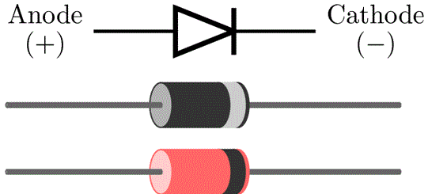
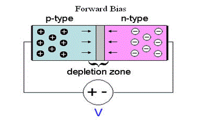
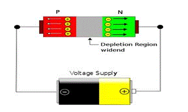

• Working Principle
p-n Junction Diode
Diode is Forward Biased
Reverse Biased Condition
Types of Diode
What is a Diode?
A diode is a simple electrical device that allows the flow of current only in one direction. So it can be said to act somewhat like a switch. A specific arrangement of diodes can convert AC to pulsating DC, hence it is sometimes also called as a rectifier. It is derived from "di-ode " which means a device having two electrodes. The symbol of a p-n junction diode is shown below, the arrowhead points in the direction of conventional electric current flow.
The p-n junction is a basic building block in any semiconductor device. It is formed by joining a p type (intrinsic semiconductor doped with a trivalent impurity) and n type semiconductor (intrinsic semiconductor doped with a pentavalent impurity) together with a special fabrication technique such that a p-n junction is formed. Hence it is a device with two elements, the p-type forms anode and the n-type forms the cathode. These terminals are brought out to make the external connections.
Working Principle of Diode
What happens Inside the p-n Junction Diode?
The n side will have large number of electrons and very few holes (due to thermal excitation) whereas the p side will have high concentration of holes and very few electrons. Due to this a process called diffusion takes place. In this process free electrons from the n side will diffuse (spread) into the p side and combine with holes present there, leaving a positive immobile (not moveable) ion in the n side. Hence few atoms on the p side are converted into negative ions. Similarly few atoms on the n-side will get converted to positive ions. Due to this large number of positive ions and negative ions will accumulate on the n-side and p-side respectively. This region so formed is called as depletion region. Due to the presence of these positive and negative ions a static electric field called as "barrier potential" is created across the p-n junction of the diode. It is called as "barrier potential" because it acts as a barrier and opposes the flow of positive and negative ions across the junction.
To make use of this p-n junction diode we have to apply an external DC voltage to it. Applying an external DC voltage to the diode is called as biasing. If the p-side (anode) is connected to the positive terminal of the supply and the n-side (cathode) to the negative terminal of the supply, the diode is said to be forward biased. In the same way if the n-side is connected to the positive terminal of the supply and the p-side to the negative terminal of the supply, the diode is said to be reversed biased. Most of the times a resistance has to be connected in series with it to limit the electric current flowing through the diode. This is the working principle of diode.
What happen When the Diode is Forward Biased?
When the diode is forward biased, due to the negative terminal on the n-side, electrons from the n-side are pushed towards the p-region. Similarly due to positive voltage on the p-side of the diode, Holes from the p-region are pushed towards n-side. Due to this the electrons will start converting the positive ions in the p-region into neutral atoms and holes will start converting the negative ions in the n-region to neutral atoms. Hence width of the depletion region starts reducing due to reduction in the barrier potential. (As the atoms in the depletion region are getting converted into neutral atoms less and less charged ions remain in this region with increase in supply voltage, hence width decreases.) This keeps happening and at a certain point the depletion region collapses and there is no opposition to the flow of current. Hence large number of electrons and holes will cross the junction and make the electric current to flow from anode to cathode.
Hence, forward biased electrical resistance of diode is very small and hence there is a small voltage drop (Practical condition, ideally there should be 0 forward resistance) across it. Its value for silicon diode is about 0.7 V.
Thus the p-n junction diode will allow a electric current to pass through it only when it is forward biased.

What happens in the Reverse Biased Condition?
When the diode is reverse biased the hole from the p-side will get attracted towards the negative terminal of the supply and electrons from the n-side are attracted towards the positive terminal. Hence the process of widening of the depletion region takes place and hence more and more opposition to the flow of electric current takes place.

Hence, ideally the reverse biased resistance of the diode is infinite and no electric current flows from the diode when it is reversed biased. Due to large reverse biased voltage, suddenly large electric current will flow through the reverse biased voltage. Due to this large power gets dissipated in the diode which may damage it permanently.
Types of Diode
The types of diode are as follow-
1) Zener diode
2) P-N junction diode
3) Tunnel diode
4) Varractor diode
5) Schottky diode
6) Photo diode
7) PIN diode
8) Laser diode
9) Avalanche diode
10) Light emitting diode
 by
by